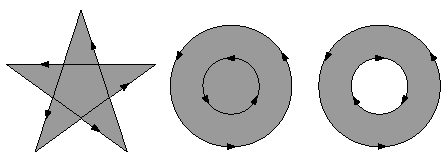
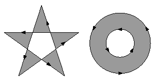

The Fill method used in the previous section paints
the insides of all the subpaths of a current path, considered together.
Any subpaths that are open are implicitly closed before being filled.
For a simple path, it is intuitively clear what region lies inside. However, for a
more complex path -- for example, a path that intersects itself or has one subpath
that encloses another -- the interpretation of "inside" is not always obvious. The
path machinery uses one of two rules for determining which points lie inside a
path: the nonzero winding number rule and the even-odd rule.
4.3.1 Nonzero Winding Number Rule
The nonzero winding number rule determines whether a given point is inside a
path by conceptually drawing a ray from that point to infinity in any direction
and then examining the places where a segment of the path crosses the ray. Starting
with a count of 0, the rule adds 1 each time a path segment crosses the ray
from left to right and subtracts 1 each time a segment crosses from right to left.
After counting all the crossings, if the result is 0 then the point is outside the path;
otherwise it is inside.
For simple convex paths, the nonzero winding number rule defines the inside
and outside as one would intuitively expect. The more interesting cases are those
involving complex or self-intersecting paths.
For a path consisting of a five-pointed star, drawn with five connected straight
line segments intersecting each other, the rule considers the inside to be the entire
area enclosed by the star, including the pentagon in the center. For a path composed
of two concentric circles, the areas enclosed by both circles are considered
to be inside, provided that both are drawn in the same direction. If the circles are
drawn in opposite directions, only the "doughnut" shape between them is inside,
according to the rule; the "doughnut hole" is outside:

4.3.2 Even-Odd Rule
An alternative to the nonzero winding number rule is the even-odd rule. This rule
determines the "insideness" of a point by drawing a ray from that point in any
direction and simply counting the number of path segments that cross the ray,
regardless of direction. If this number is odd, the point is inside; if even, the point
is outside. This yields the same results as the nonzero winding number rule for
paths with simple shapes, but produces different results for more complex
shapes.

To fill a path using the Even-Odd rule, the Fill and FillStroke methods
must be called with a True argument, as follows:
Page.Canvas.Fill True
Page.Canvas.FillStroke True